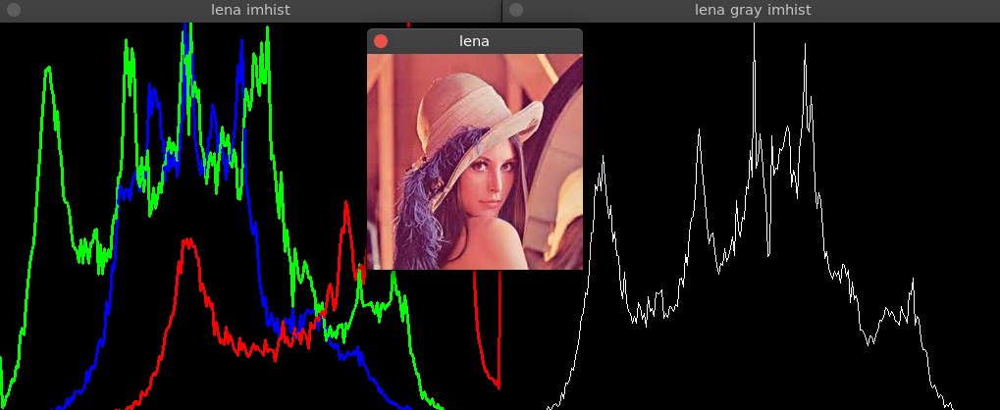

OpenCV直方图
- categories
- >
- OpenCV
写在前面
没有发现 OpenCV 自带的直方图，只能自己动手。
参考
直方图
直方图：简单的表格，表示一幅图像中具有某个值的像素的数量。
灰度图像的直方图有 256 个项目，也称箱子(bin)。0 号箱子提供值为 0 的像素数量，1 号箱子提供值为 1 的像素数量…
RGB 图像每个通道有 256 个项目
代码
#include <iostream>
#include <vector>
#include <opencv2/opencv.hpp>
using namespace std;
using namespace cv;
Mat imhist(Mat image){
Mat img = image.clone();
bool uniform = true; // 是否均匀
bool accumulate = false; // 是否累积
int histSize = 256; // 直方图箱子数量
float range[] = {0, 256}; // 像素范围
const float* histRange = {range};
// 直方图图像属性
int hist_w = 512; // 宽度
int hist_h = 400; // 高度
int bin_w = cvRound((double)hist_w / histSize); // 每个箱子所占宽度
if(img.channels() == 1){ // 处理灰度图像
Mat plane = img.clone();
Mat hist; // 存储灰度图像直方图
calcHist(&plane, // 需要计算的图像
1, // 图像数量
0,
// 官方定义：The channel (dim) to be measured. In this case it is just the intensity (each array is single-channel) so we just write 0.
// 个人理解 数组都是单通道的，索引从0开始（个人看法）
Mat(), // 掩码，Mat()不使用
hist, // 作为结果的直方图
1, // 直方图维度
&histSize, // 箱子数量
&histRange, // 像素值范围
uniform,
accumulate);
// 定义直方图图像(高度，宽度，数据类型，颜色(0为黑色))
Mat histImage(hist_h, hist_w, CV_8UC1, Scalar(0));
// 归一化，即所有箱子的数量相加为1
normalize(hist, hist, 0, histImage.rows, NORM_MINMAX, -1, Mat());
// 绘制直方图
for(int i=1;i<histSize;++i){
line(histImage, Point(bin_w*(i-1), hist_h-cvRound(hist.at<float>(i-1))),
Point(bin_w*(i), hist_h - cvRound(hist.at<float>(i))),
Scalar(255), 1);
}
return histImage;
}
else{
vector<Mat> bgr_planes;
split(img, bgr_planes); // 划分为B、G、R通道
// 蓝色通道直方图，绿色通道直方图，红色通道直方图
Mat b_hist, g_hist, r_hist;
calcHist(&bgr_planes[0], 1, 0, Mat(), b_hist, 1, &histSize, &histRange, uniform, accumulate);
calcHist(&bgr_planes[1], 1, 0, Mat(), g_hist, 1, &histSize, &histRange, uniform, accumulate);
calcHist(&bgr_planes[2], 1, 0, Mat(), r_hist, 1, &histSize, &histRange, uniform, accumulate);
// 直方图图像
Mat histImages(hist_h, hist_w, CV_8UC3, Scalar(0,0,0));
// 归一化
normalize(b_hist, b_hist, 0, histImages.rows, NORM_MINMAX, -1, Mat());
normalize(g_hist, g_hist, 0, histImages.rows, NORM_MINMAX, -1, Mat());
normalize(r_hist, r_hist, 0, histImages.rows, NORM_MINMAX, -1, Mat());
// 绘制直方图
for(int i=1;i<histSize; ++i){
line(histImages, Point(bin_w*(i-1), hist_h-cvRound(b_hist.at<float>(i-1))),
Point(bin_w*(i), hist_h - cvRound(b_hist.at<float>(i))),
Scalar(255, 0, 0), 2, 8, 0);
line(histImages, Point(bin_w*(i-1), hist_h-cvRound(g_hist.at<float>(i-1))),
Point(bin_w*(i), hist_h - cvRound(g_hist.at<float>(i))),
Scalar(0, 255, 0), 2, 8, 0);
line(histImages, Point(bin_w*(i-1), hist_h-cvRound(r_hist.at<float>(i-1))),
Point(bin_w*(i), hist_h - cvRound(r_hist.at<float>(i))),
Scalar(0, 0, 255), 2, 8, 0);
}
return histImages;
}
}
测试函数
void test(){
cv::Mat img = cv::imread("lena.jpeg");
cv::imshow("lena", img);
cv::imshow("lena imhist", imhist(img));
cv::cvtColor(img, img, cv::COLOR_BGR2GRAY);
cv::imshow("lena gray imhist", imhist(img));
cv::waitKey(0);
}执行结果

写在后面
至少能画出直方图。
如有错误、更优方法，欢迎指正。
comment:
- Valine
- LiveRe
- ChangYan